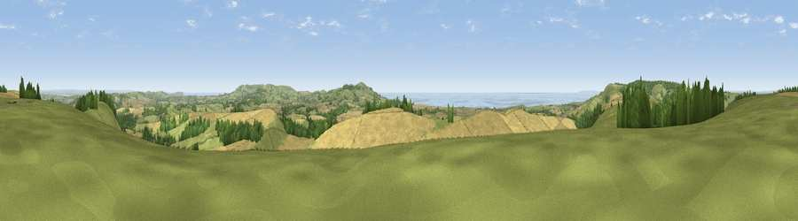

Viewpoint near Chillerton
#1431 in England · top 17% of its area beats it · near ChillertonThe view, rendered

A 360° render of this exact spot computed from the terrain model, tree cover and land cover — summer colours, afternoon light, calibrated against photographs of famous viewpoints. Real trees, hedges and buildings will differ in detail.
The panorama
Grey silhouette: terrain skyline in each direction (720 bearings, Earth curvature and refraction included). Dashed green: skyline with trees (+15 m) and buildings (+8 m) as obstacles. Blue strip: how far the ground is visible on each bearing.
Where the view opens
Wedge length = distance to the farthest visible ground on that bearing (vegetation-aware). Rings at 10, 25 and 50 km.
What fills the view
42% cropland · 36% grassland · 12% woodland · 9% water ·
Angular shares of the visible panorama (visual magnitude), not map area. Landscape diversity 0.54 (0–1 Shannon).
Key numbers
More beautiful places nearby
The staircase of upgrades: each row has a higher view potential than everything closer. Driving times are estimates from straight-line distance, calibrated against real road routing — check an actual route before setting out.
| Place | Direction | Drive | Score |
|---|---|---|---|
| Limerstone Down | W · 4 km | ~9 min | 84.5 |
| St Catherines Hill | SSE · 6 km | ~13 min | 87.6 |
| Viewpoint near Chale | SSE · 7 km | ~15 min | 88.3 |
| Viewpoint near Niton | SSE · 8 km | ~16 min | 89.2 |
| Viewpoint near West Bexington | W · 92 km | ~117 min | 89.5 |
| The Knoll | W · 94 km | ~118 min | 91.0 |
50.64802, -1.32916 · source: screening · position refined by local search. Computed location — check access rights before visiting.